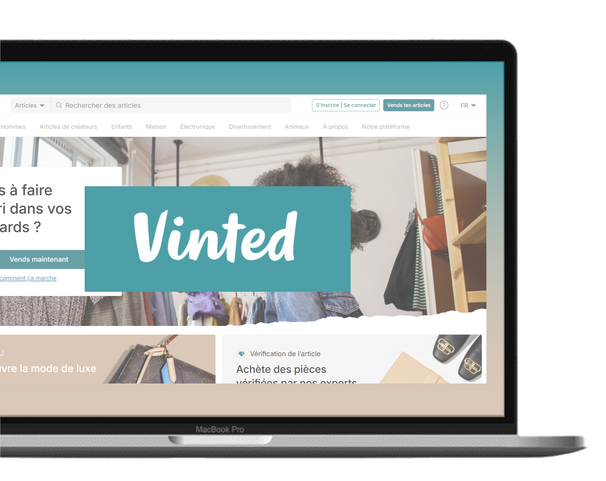

Création d’un site web inspiré de Vinted dans le cadre de mes études. Le projet visait à concevoir une plateforme permettant aux utilisateurs d’acheter, vendre et gérer des articles tout en respectant les normes RGPD. La gestion du projet a suivi la méthode Scrum.
Réalisation de diagrammes UML (collaboration, cas d’utilisation, séquences) pour modéliser les processus. Conception de la base de données avec MCD, MLD et script SQL.
Utilisation de Laravel et PostgreSQL pour implémenter le site. Intégration des fonctionnalités principales : inscription, recherche et filtres, gestion des ventes et retours, ajout d’un chatbot, et gestion des cookies.
Tests de performance avec Laravel Pulse pour garantir la réactivité et la rapidité du site. Vérifications de sécurité contre les cyberattaques. Analyse de fréquentation pour optimiser l’expérience utilisateur.
Gestion collaborative avec Azure DevOps : organisation en sprints, documentation des étapes, suivi des tâches, et revues régulières avec livrables en fin de sprint. Rédaction d’un guide utilisateur et d’une synthèse technique détaillant l’architecture du projet.